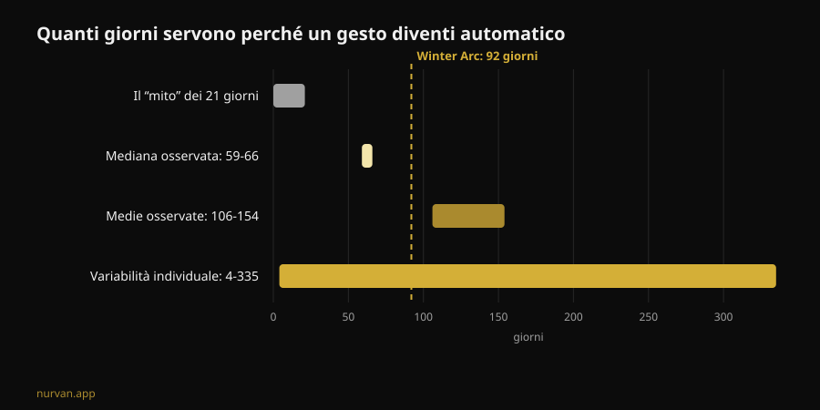
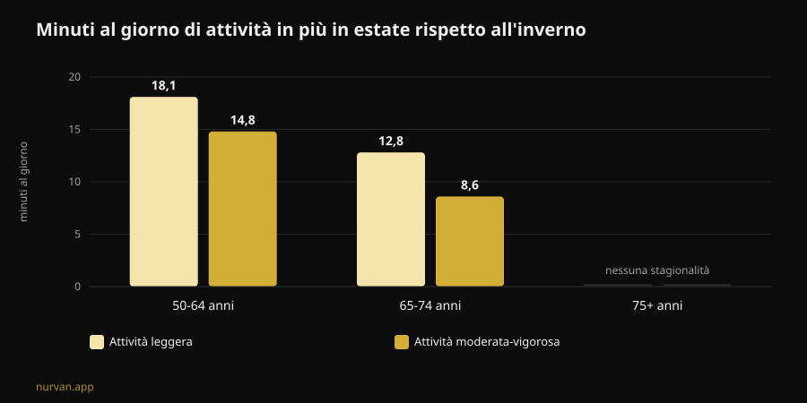

Winter Arc: funziona davvero? Cosa dicono gli studi
Il Winter Arc è la sfida di questo momento: tre mesi di disciplina totale, dal primo ottobre al primo gennaio, con una lista di regole da rispettare ogni giorno. La promessa è arrivare a gennaio "trasformato". Ho letto sette lavori indicizzati su formazione delle abitudini, stagionalità dell'attività fisica e pianificazione del comportamento, e il risultato è più interessante di un semplice sì o no: il trend ha ragione sul momento scelto e torto quasi su tutto il metodo.

In breve
- I 21 giorni non esistono. La revisione sistematica più recente sul tempo necessario a rendere automatica un'abitudine di salute riporta una mediana di 59-66 giorni e medie fra 106 e 154 giorni, con una variabilità individuale che va da 4 a 335 giorni (Singh et al., 2024).
- Novantadue giorni sono abbastanza per metà delle persone. La durata "ufficiale" della sfida copre la mediana, ma per chi sta nella parte lenta della distribuzione tre mesi finiscono prima che l'abitudine si sia consolidata.
- L'inverno non è una scusa inventata. Con l'accelerometro, gli adulti fra 50 e 64 anni fanno in estate 14,8 minuti al giorno in più di attività moderata-vigorosa e 18,1 in più di attività leggera rispetto all'inverno; dormono anche 31,8 minuti in più per notte d'inverno (Cepeda et al., 2018).
- Il buco del Winter Arc è il giorno in cui salti. Su 19.883 persone, il tipo di pianificazione che media davvero il passaggio dall'intenzione al comportamento è il coping planning — il piano B per gli imprevisti — mentre il semplice piano "quando e dove" non risulta significativo (Wang et al., 2025).
- Quello che costruisci non svanisce il 2 gennaio. Negli anziani, da 12 a 24 settimane di stop completo dai pesi non hanno ridotto in modo statisticamente significativo la massa muscolare guadagnata; il calo diventa significativo oltre le 31 settimane (Grgic, 2022).

Che cos'è il Winter Arc, in pratica
Nato su TikTok e diventato un formato editoriale, il Winter Arc è una finestra temporale: dal 1° ottobre al 1° gennaio, cioè 92 giorni. Non c'è un protocollo. Le pagine che lo spiegano concordano su una sola cosa — "disciplina e costanza" — e lasciano a te la lista delle regole, che nella versione social tipica diventa un pacchetto di cinque o sei: sveglia all'alba, palestra un certo numero di volte a settimana, dieta rigida, lettura, doccia fredda, zero alcol.
Due elementi di quella struttura hanno un fondamento. Il primo è la scelta del periodo: l'inverno è davvero il momento in cui l'attività cala. Il secondo è l'idea di scrivere gli obiettivi e spuntarli: il self-monitoring è una delle tecniche più usate negli interventi digitali sull'attività fisica (Omkar et al., 2026).
Il resto — la durata a termine, il numero di regole, la logica della serie da non rompere — è decorazione narrativa. E una delle tre fa danni.
Il mito dei 21 giorni: i numeri veri
La cifra dei 21 giorni gira da decenni e non viene da uno studio sulle abitudini. La revisione sistematica con meta-analisi di Singh e colleghi, pubblicata alla fine del 2024, ha raccolto 20 studi su 2.601 persone che misuravano l'automatismo di comportamenti di salute: attività fisica, bere acqua, filo interdentale, alimentazione, riduzione della sedentarietà.
Quattro di quegli studi riportano quanto tempo serve per arrivare all'automatismo. Le mediane stanno fra 59 e 66 giorni. Le medie fra 106 e 154: più alte perché qualcuno ci mette molto di più. E il dato che conta davvero per te è l'intervallo individuale osservato: da 4 a 335 giorni.
Non è una differenza di dettaglio. Vuol dire che due persone che iniziano lo stesso primo ottobre con la stessa scheda possono trovarsi, a metà gennaio, una con il gesto diventato automatico e l'altra ancora a combattere ogni singola sera. E la seconda non è meno disciplinata: è dentro un intervallo normale.
Dalla stessa revisione arriva la parte utile. Sulla forza dell'abitudine incidono la frequenza, il momento della giornata, il tipo di comportamento, il fatto che l'abitudine sia scelta dalla persona e non imposta, il giudizio affettivo su quel gesto e la presenza di abitudini "preparatorie". Le pratiche mattutine e i comportamenti auto-scelti risultano i più forti. Gli autori segnalano anche il limite del lavoro: 11 studi su 20 hanno un rischio di bias elevato e il numero di studi è piccolo.
Tradotto nel linguaggio del trend: una regola che hai scelto tu vale più di cinque copiate da un carosello.
L'inverno non è una scusa: il calo è misurato
Qui il Winter Arc coglie qualcosa di reale. Lo studio Rotterdam ha messo un accelerometro al polso di 1.116 persone per sette giorni ciascuna, fra il 2011 e il 2016, e ha confrontato le stagioni.
Negli adulti fra 50 e 64 anni, l'attività moderata-vigorosa in estate è più alta di 14,8 minuti al giorno rispetto all'inverno, e l'attività leggera di 18,1 minuti al giorno. Nei giovani-anziani fra 65 e 74 anni il divario è di 8,6 e 12,8 minuti. Negli over 75 la stagionalità sparisce. Il sonno notturno, al contrario, è più lungo d'inverno: +31,8 minuti nei 50-64.
Due dettagli cambiano la lettura. Il primo: il pattern è spiegato da temperatura ambientale e ore di luce, non dal carattere. Il secondo, il più scomodo: il comportamento sedentario non mostra stagionalità. Tradotto, d'inverno non ci sediamo di più — ci muoviamo meno. Sparisce la quota di movimento volontario, quella che decidi.
Quindi l'idea di fare qualcosa a novembre non è isteria social. È la stagione in cui il margine si perde. Gli autori stessi concludono che interrompere la sedentarietà con attività leggera è un buon punto di partenza.

Il difetto di progetto: non c'è un piano per il giorno in cui salti
Questo è il punto in cui la sfida si rompe, e non è un problema di volontà.
Il modello mentale del Winter Arc è la serie da non interrompere: 92 caselle da spuntare. Il che significa che il protocollo non prevede il giorno in cui ti ammali, lavori fino alle nove o ti si rompe l'auto. Quando succede, la serie è spezzata e la sfida ha già fallito — a dicembre, con tre settimane buone alle spalle.
La ricerca sulla pianificazione dice esattamente dove intervenire. Una meta-analisi su 41 studi randomizzati e 5.439 persone ha misurato l'effetto degli interventi di pianificazione sull'attività fisica: SMD 0,35 (intervallo di confidenza 95% da 0,25 a 0,44), cioè un effetto piccolo-moderato ma consistente, migliore quando ci sono rinforzi durante il follow-up (Peng et al., 2022).
E un lavoro del 2025 ha smontato il meccanismo con un modello di equazioni strutturali su 19.883 persone in 49 studi. L'intenzione predice il comportamento (β = 0,416). Ma dei due tipi di piano, solo il coping planning — "cosa faccio se piove, se finisco tardi, se salto lunedì" — media in modo significativo il passaggio dall'intenzione al fatto (β = 0,067, p < 0,001). L'action planning puro, il classico "martedì e giovedì alle 19 in palestra", nello stesso modello non risulta significativo (β = -0,001).
Le due analisi non dicono la stessa cosa sull'action planning, e vale la pena esplicitarlo: nei trial di Peng gli interventi basati su action planning funzionavano meglio, nel modello di Wang è il coping planning a fare il lavoro di mediazione. Ciò che resta in piedi in entrambi è che pianificare batte decidere sul momento, e che il piano per gli imprevisti non è un dettaglio accessorio.
Il Winter Arc, così come circola, ha solo la prima metà: regole, orari, caselle. Non ha la seconda.
Cosa dice davvero la ricerca
| Affermazione diffusa | Verdetto | Fonte |
|---|---|---|
| "Servono 21 giorni per creare un'abitudine" | Smentito: mediana 59-66 giorni, range 4-335 | Singh et al., 2024 |
| "Novantadue giorni bastano per trasformarti" | Da precisare: coprono la mediana, non la coda lenta | Singh et al., 2024 |
| "D'inverno è solo questione di motivazione" | Da precisare: il calo è misurato e spiegato da luce e temperatura | Cepeda et al., 2018 |
| "Se salti un giorno la serie è rotta, ricomincia" | Smentito come strategia: serve il piano B, non il reset | Wang et al., 2025; Peng et al., 2022 |
| "Se ti fermi dopo la sfida perdi tutto in due settimane" | Smentito nei tempi: 12-24 settimane di stop senza perdita significativa (dati su anziani) | Grgic, 2022 |
| "Serve una lista di cinque regole al giorno" | Non supportato: contano frequenza e scelta personale | Singh et al., 2024 |
| "Un'app non serve, serve disciplina" | Da precisare: effetto piccolo ma positivo degli strumenti digitali | Omkar et al., 2026 |
E se ti fermi il 2 gennaio?
La paura che tiene in piedi le sfide a tempo è questa: finisce, mollo, perdo tutto. I numeri sul detraining sono più generosi di così.
La meta-analisi di Grgic ha raccolto sei studi su anziani che avevano allenato la forza per 9-24 settimane, con un aumento netto della massa muscolare (d = 0,99). Nei periodi di stop completo, la massa cala (d = -0,83) — ma il sottogruppo che si fermava per 12-24 settimane non mostra una riduzione statisticamente significativa (d = -0,60, intervallo da -1,21 a 0,01). Il calo diventa chiaro oltre le 31 settimane. Importante: è un campione di anziani, non di giovani allenati da anni, e il dato riguarda la dimensione del muscolo, non la forza.
La forza, tra l'altro, è la cosa più fragile: nell'arco della vita forza e potenza calano fino a otto volte più in fretta della massa muscolare (Fyfe et al., 2021). Ed è anche la cosa più facile da difendere con poco. Quella stessa review raccoglie le evidenze sulle dosi minime: volumi di seduta bassi con carichi alti e poche sedute, oppure micro-sedute frequenti con poca o nessuna attrezzatura, migliorano forza e capacità funzionale. Con una nota che pesa sul Winter Arc: volumi di allenamento più alti sono associati a più fastidio e meno piacere, e questo influenza negativamente l'aderenza.
Cioè: il programma più duro non è il programma che resiste.
Come applicarlo
Se vuoi usare la cornice del Winter Arc senza il suo difetto di progetto:
- Scegli una regola, non cinque. Quella che hai scelto tu, non quella del video. La scelta personale è fra i determinanti della forza dell'abitudine.
- Tieni la frequenza alta e l'impegno basso. Tre sedute brevi che fai battono quattro sedute lunghe che salti. Il piacere percepito non è un vizio: è una variabile di aderenza.
- Scrivi il piano B prima di averne bisogno. "Se salto martedì, vado mercoledì." "Se la palestra è chiusa, 20 minuti a casa." Questo, non la casella spuntata, è ciò che la ricerca associa al comportamento effettivo.
- Attaccati alla luce. Visto che il calo invernale è legato a temperatura e ore di luce, tieni la seduta nelle fasce in cui l'ambiente ti aiuta e togli attrito: borsa pronta, tragitto breve, orario fisso.
- Cancella la data di scadenza. Un contatore che si azzera il 1° gennaio è l'opposto di un'abitudine. Se arrivi a gennaio e il gesto non è ancora automatico, sei nella norma statistica: non hai finito, stai continuando.
- Misura i carichi, non i giorni di fila. Una serie di 92 caselle non ti dice se stai progredendo. Una progressione di carico sì — e sopravvive a un lunedì saltato.
Su cosa chiedere a chi ti segue da remoto abbiamo un articolo dedicato: il coaching online funziona?. Se invece ti interessa il quadro più ampio di cosa regge e cosa no fra le mode del settore, l'abbiamo messo in fila nelle tendenze fitness 2027.
Nurvan: la costanza si misura sui carichi, non sulle caselle
Nurvan registra ogni serie, ripetizione e RIR e ti mostra la progressione reale settimana per settimana: se lunedì salti, il grafico dei carichi resta, perché a contare è la curva, non la striscia di giorni consecutivi. Le serie di riscaldamento proposte automaticamente e lo storico degli esercizi abbassano l'attrito nelle sere in cui ti alleni di malavoglia — che d'inverno sono la maggior parte.
Domande frequenti
Quanto tempo serve davvero per creare un'abitudine di allenamento?
Secondo la revisione sistematica più recente, la mediana per arrivare all'automatismo nei comportamenti di salute è di 59-66 giorni, con medie di 106-154 giorni e una variabilità individuale che va da 4 a 335 giorni. I 21 giorni non vengono da questa letteratura.
Il Winter Arc fa male?
Il formato in sé non è pericoloso: è una finestra temporale. I problemi nascono dalle versioni con molte regole rigide insieme, dalla logica del "ricomincia da zero" dopo un salto e dai volumi di allenamento alti e improvvisi in chi parte da fermo. Se hai dolore, una condizione di salute in corso o stai riprendendo dopo un infortunio, parlane con un medico prima di iniziare.
Meglio una sfida di 90 giorni o nessuna scadenza?
I dati non confrontano direttamente i due formati. Quello che sappiamo è che la scadenza non ha un ruolo nella formazione dell'abitudine, mentre frequenza, scelta personale e pianificazione degli imprevisti sì. Una scadenza può aiutare a partire; mantenerla come traguardo finale è il rischio.
Se mi fermo a gennaio, quanto perdo?
Nella meta-analisi sugli anziani, 12-24 settimane di stop completo dai pesi non hanno prodotto una riduzione statisticamente significativa della massa muscolare; oltre le 31 settimane sì. Non sono dati su giovani allenati e riguardano la dimensione del muscolo, non la forza. In ogni caso, poche sedute brevi bastano a difendere molto più di quanto si creda.
Leggi anche
- Coaching online: funziona? Cosa dicono gli studi — cosa deve controllare un coach a distanza per valere quanto uno in sala.
- Tendenze fitness 2027: cosa funziona davvero — le mode del settore passate al filtro delle evidenze.
- Schede di allenamento con l'AI: cosa dicono gli studi — quando un programma generato automaticamente regge e quando no.
Fonti
- Singh B, Murphy A, Maher C, Smith AE, 2024. Time to Form a Habit: A Systematic Review and Meta-Analysis of Health Behaviour Habit Formation and Its Determinants. Healthcare (Basel) 12(23):2488. PMID 39685110 · DOI 10.3390/healthcare12232488
- Cepeda M, Koolhaas CM, van Rooij FJA, Tiemeier H, Guxens M, Franco OH, Schoufour JD, 2018. Seasonality of physical activity, sedentary behavior, and sleep in a middle-aged and elderly population: The Rotterdam study. Maturitas 110:41–50. PMID 29563034 · DOI 10.1016/j.maturitas.2018.01.016
- Wang L, Li X, Qiu K, Wang D, 2025. Examining the impact of perceived behavioral control and planning on closing the exercise intention-behavior gap: Insights from a meta-analytic structural equation modeling study. Psychol Sport Exerc 78:102822. PMID 39952422 · DOI 10.1016/j.psychsport.2025.102822
- Peng S, Othman AT, Yuan F, Liang J, 2022. The Effectiveness of Planning Interventions for Improving Physical Activity in the General Population: A Systematic Review and Meta-Analysis of Randomized Controlled Trials. Int J Environ Res Public Health 19(12):7337. PMID 35742582 · DOI 10.3390/ijerph19127337
- Grgic J, 2022. Use It or Lose It? A Meta-Analysis on the Effects of Resistance Training Cessation (Detraining) on Muscle Size in Older Adults. Int J Environ Res Public Health 19(21):14048. PMID 36360927 · DOI 10.3390/ijerph192114048
- Fyfe JJ, Hamilton DL, Daly RM, 2021. Minimal-Dose Resistance Training for Improving Muscle Mass, Strength, and Function: A Narrative Review of Current Evidence and Practical Considerations. Sports Med 52(3):463–479. PMID 34822137 · DOI 10.1007/s40279-021-01605-8
- Omkar A, Bertrand JK, Sadasivan C, et al., 2026. Behaviour change techniques in eHealth interventions for older, frail, or sarcopenic adults: A systematic review and meta-analysis. Digit Health 12:20552076261473804. PMID 42534183 · DOI 10.1177/20552076261473804
Fonti scientifiche consultate tramite PubMed. Segnali di tendenza: la pagina esplicativa di Gymshark sul Winter Arc (stagione 1° ottobre-1° gennaio) e la copertura italiana del termine su My-Personaltrainer, SportOutdoor24 ed EroicaFenice, tutte senza riferimenti alla letteratura sulla formazione delle abitudini. Testo, struttura, grafici e verifiche di questo articolo sono originali.
Giammaria Loi è il fondatore di Nurvan. Si allena con i pesi dal 2012, lavora come personal trainer e coach certificato FIPE dal 2013 e gareggia nel powerlifting a livello nazionale dal 2018. Ogni articolo che firma parte dagli studi scientifici e arriva a ciò che funziona davvero in palestra. Pagina autore
Nota: contenuto informativo, non sostituisce il parere di un medico o di un professionista qualificato. Se hai dolore, una condizione di salute in corso o stai riprendendo dopo un infortunio, parlane con un medico prima di iniziare o cambiare un programma di allenamento.